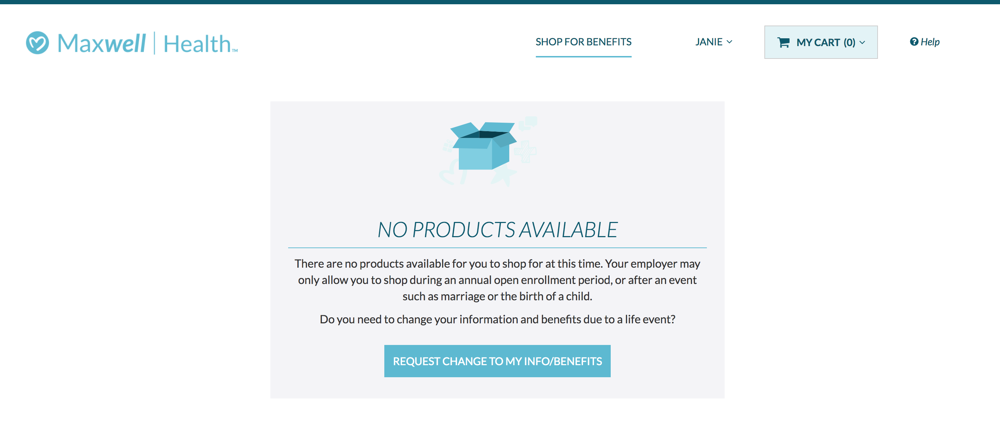
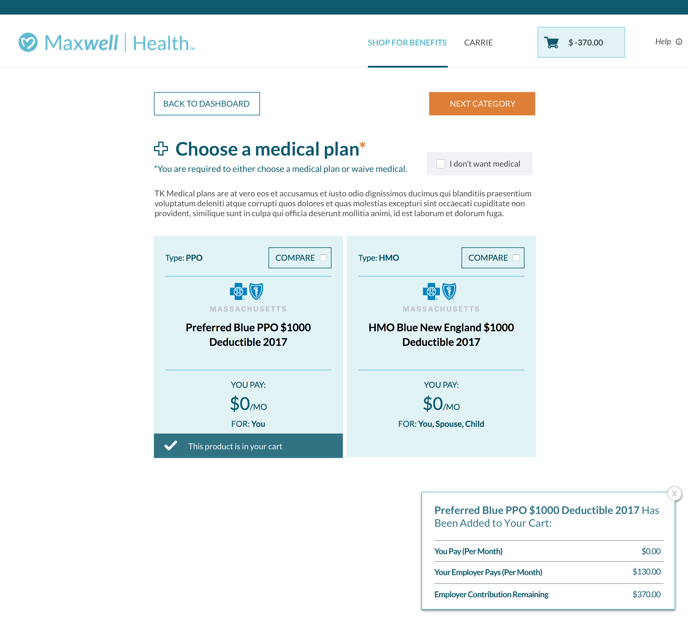
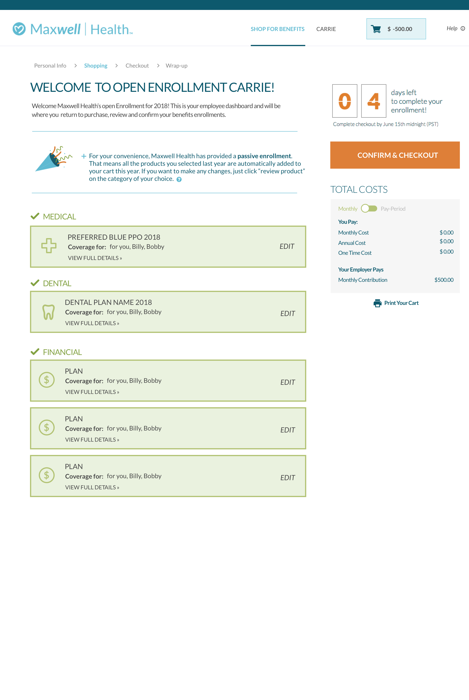
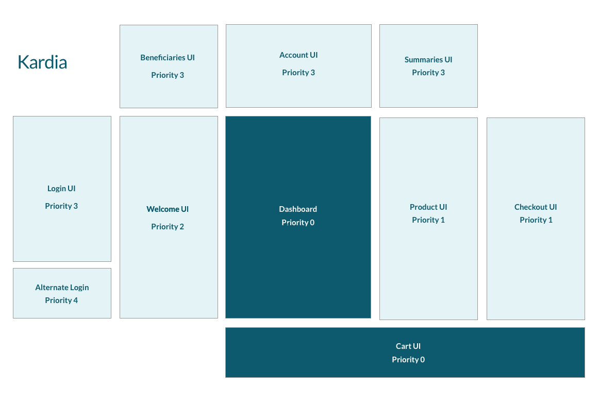
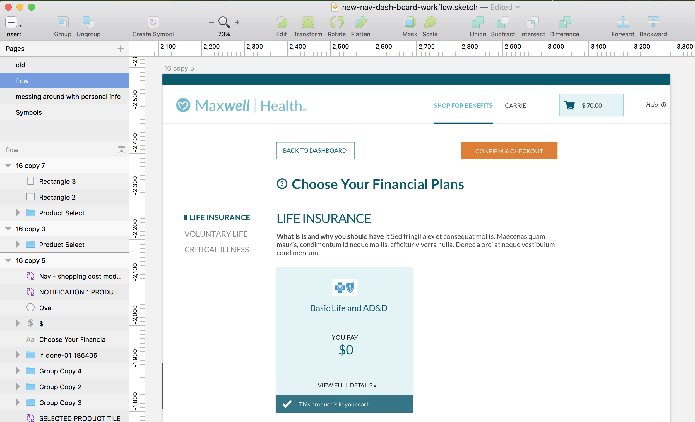

Kardia
Maxwell's core application, internally known as Kardia (or heart, in Latin), is the root of our business, and where employees can shop for their benefits.
In 2017 I was assigned to the 3 person team responsible for restrategizing, architecting, and designing the member application, which I dubbed Kardia. I took on the role of engineer & interaction designer, working closely with the design team and engineering team to refactor our codebase and implement component based design philosophy into our application, as well as scalable CSS and clean React code.
 I also did UI work and illustration, while developing my designs.Understanding the Problem
The biggest challenges Kardia faced were a legacy codebase and outdated design language. While no screenshots of the old application survive, we've made considerable progress in the past year simply by refactoring our CSS into a scalable SCSS pattern that can be replicated organization-wide.
The recurring theme with Kardia's legacy issues also lay in incomplete and unintuitive solutions for abstracting away the complication of insurance products. A large chunk of our work in the latter half of 2017 was spending our time identifying and terminating UX dead ends by rebuilding components, removing entire user routes, or refactoring parts of our data model to better serve our users.
Interestingly enough, the platform's legacy issues were the biggest design challenge we faced, as often the domain modeling of insurance products in the real world did not match the data modeling on our back end, forcing visual design decisions to be made as a compromise between the differences in architecture.
We learned that the UX of an application will always be the shadow to the data model.
 Insurance products were modeled after ecommerce products in our platform initially, allowing us to create analogous experiences to consumers with no insurance knowledge, but forcing the metaphor to be extended into scenarios where it was suboptimal.Re-thinking Insurance
In our drive to turn our application from simple shopping platform to a wellness platform, we progressed the original idea of an integrated dashboard that allows you to manage all qualifying life events for insurance reasons.
This meant that we also had to rethink the analogy to ecommerce and come up with our own original funneling ideology, while both educating the customer and maximizing their interactions with products they could purchase.
While the whiteboard sessions for this product are NDA, the final mockups have changed enough that I am able to share them. We began with the idea of funneling our users into a more opiniated user flow upon login:
 The dashboard was the culmination of rearchitecting our platform.The Strangler Pattern
The software engineering pattern known affectionally as the Strangler pattern is normally used as a means of describing the gradual but deliberate replacement of old parts of an application. We decided to apply this philosophy to Kardia, seprarating the architecture into chunks, prioritizing the chunks, and developing entire businness strategies around each indiviual part of the workflow
Treating the application as a collection of microapps allowed us to begin building the dashboard as the "heart" with user flows snaking outwards and interacting with other parts of our application. This small shift of thinking meant that each microapp could be individually planned, designed, and deployed, instead of a lengthy redesign we could start adding value nearly immediately.
With the component based architecture we could focus on iterating on the visual design while continuously writing actual code.
 This project is still ongoing, so this is all I can show for now!